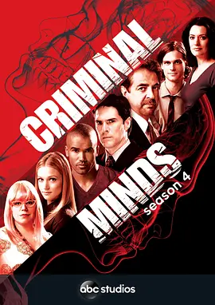

9.4
犯罪心理 第四季
Criminal Minds Season 4
2008
美国
评分 9.4
导演:
爱德华·艾伦·贝内罗
演员:
乔·曼特纳 / 帕姬·布鲁斯特 / 谢默·摩尔 / 马修·格雷·古柏勒 / A·J·库克 / 克里斯汀·范奈丝 / 托马斯·吉布森
类型:
剧情,悬疑,犯罪
剧情简介
第四季开场，BAU（行为分析组）继续在美国各地追踪最隐蔽的犯罪者，然而这一次他们面对的不只是惯犯那么简单。首集 “Mayhem” 便让团队直面恐怖式的爆炸案，突显了他们工作环境对心理的侵蚀。主管霍奇为追捕新型连环杀手，选择留队，这让他家中的裂痕逐渐公开：妻子决定离开，将儿子带走，昔日坚强的外壳开始松动。与此同时，资深探员罗西从退休中归来，带着过往十年积累的经验与心结，与团队重聚。团队在夜间飞行、案件现场、会议桌前再次形成默契，却也更暴露各自的脆弱。案件层面更是暗流涌动：从宗教邪教的武装对峙到绵延数州的纵火连环杀人，从为夺命而设计的“签名案”到对警察系统的直接威胁——每一起都让团队的反应速度和心理承受成为双重考验。第四季不仅是追凶，更是让角色在极限状态下反问自己：当职责与家庭、正义与代价冲撞时，究竟是谁守护谁？而当嫌犯再一次告诉他们：“你不懂我”，团队也开始怀疑，或许连他们自己也未必完全理解。